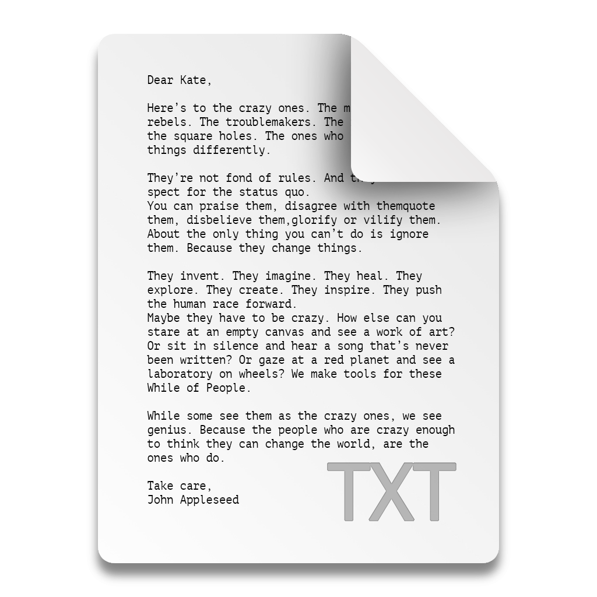

Github Repo to TXT
github.com/sudo-self/repo-to-txt
Star

GitHub URL:
Ref (branch/tag/commit sha):
Path (subdirectory):
Personal Access Token (optional - private repositories)
[This code runs in your browser. We don't use or store your token.]
Get your token
Fetch Directory Structure
Generate Text File
Copy to Clipboard
Download